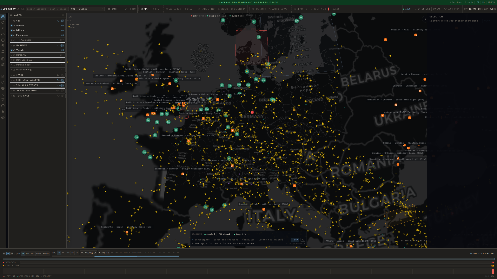
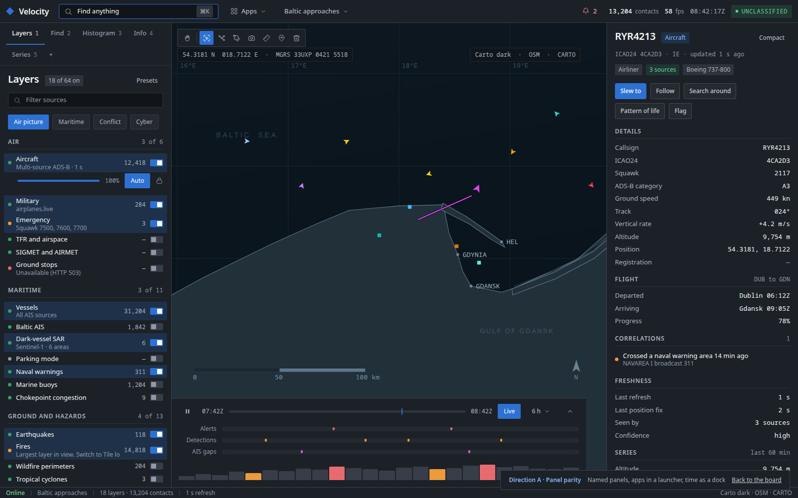
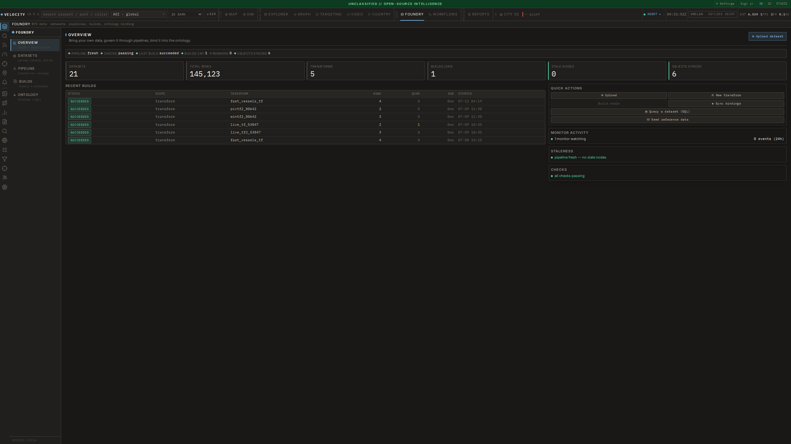
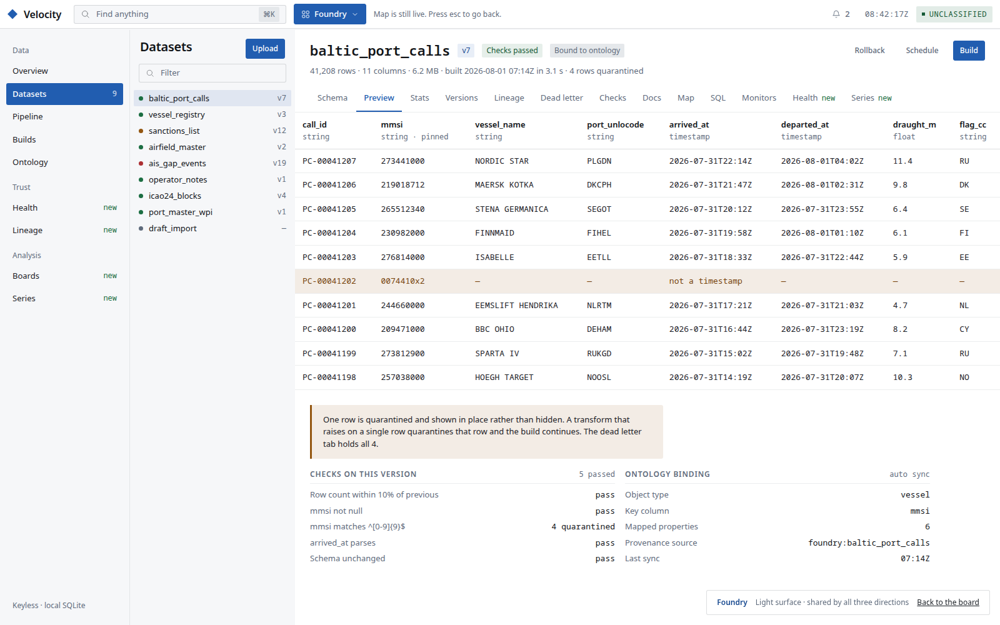
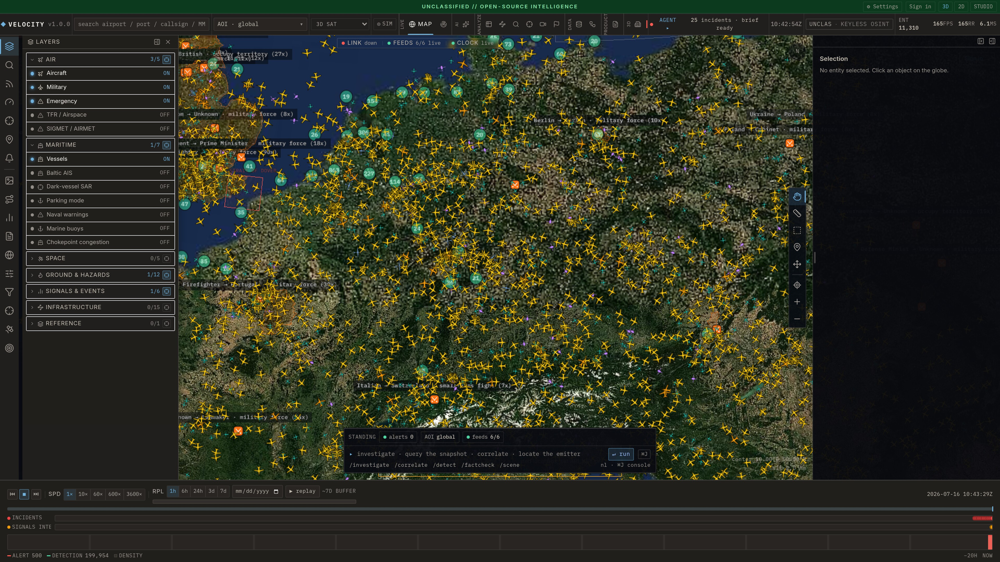
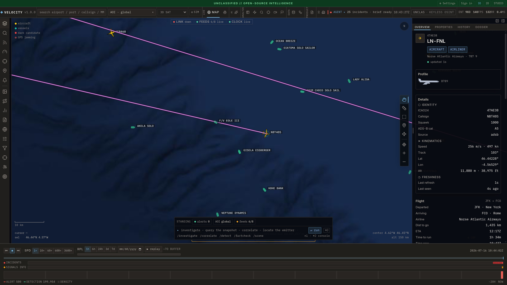

The complete surface inventory of the current console, every row mapped to a home
in the new shell. Nothing is dropped. Counts are extracted from source, not typed
by hand: layer ids and titles from registry/defaults.ts, folders from
normal/layerCatalog.ts, apps from state/appView.ts:30,
rail items from App.tsx:179-204, routes from
AppRouter.tsx:55-65.
Left is the shipped UI, from docs/media/panels/. Right is the proposal.
These are the same product at the same job.






| Axis | Today | Proposed | Justification |
|---|---|---|---|
| Shell structure | 4 grid rows: 26px classification band, 42px command bar, globe, 158px timeline footer (ConsoleShell.tsx:240) | 2 grid rows: 48px bar, globe. Marking is an inline pill; time is a collapsible dock over the map. | Returns about 140px of vertical to the globe. docs/frontend.md:99 says the globe must never be covered by permanent chrome, and two of the four rows were permanent chrome. |
| Type scale | body 13px, floor 11px, 780 literals below it (748 at 10px, 31 at 9px), uppercase 0.8px-tracked labels | body 14px, floor 12px, sentence case, one weight step | docs/decisions.md:1017 already concluded the density, not the typeface, was what read as "AI dashboard". The 11px floor was set and then never enforced. |
| Density | ~24px rows, 5 to 7px padding, nested bordered boxes | 32px rows, 8 to 16px rhythm on a spacing scale that is actually used | Counts collided with labels at 24px. --sp-* was declared in tokens.css with 0 consumers. |
| Chrome | accent-tinted section labels with a 3px left edge; Widget boxes inside bordered panels; rules between rows | plain type hierarchy; grouping by space and weight; hairlines only where two surfaces meet | The tinted eyebrow is the most recognisable ornament of the current UI and carries no information. |
| Colour | warm ink #191817, accent #6fb1dd, one dark theme everywhere | cool near-black #0B0E13, accent #4C9AFF, and a light surface for the analytical apps | Colour is the strongest signal of "same product". The dark and light split also encodes Gotham versus Foundry: dark when you are watching, light when you are building. |
| Navigation | 44px icon rail, 18 items, 10 of them in a "more" drawer, tooltips only | 4 named text tabs, apps behind one launcher, palette over all 41 surfaces | An icon with a tooltip is the reachable-but-invisible pattern the persona studies kept finding. |
PointGraphics are asserted as literal strings in
globe/invariants.test.ts. The rule that the only saturated colour
belongs to data is why the chrome went calmer rather than louder.
61 sit in one of the seven Layers-panel groups. 3 are hidden today
(normal/layerCatalog.ts:159) and stay reachable rather than being
dropped: they move behind a "Show superseded sources" disclosure in the group they
belong to, because each duplicates a source that is already on.
| Layer id | Title | Registry group | New home |
|---|---|---|---|
| airspace.nasstatus | NAS ground stops · FAA | hazards | Layers · Air |
| airspace.tfr | TFR / Airspace restrictions | infra | Layers · Air |
| aviation.adsb.global | Aircraft · Global (multi-source ADS-B) | aviation | Layers · Air |
| aviation.adsb.live.emergencies | Aircraft · Emergency squawks (7500/7600/7700) | aviation | Layers · Air |
| aviation.adsb.live.mil | Aircraft · Military (airplanes.live) | aviation | Layers · Air |
| aviation.sigmet | SIGMET / AIRMET hazards | aviation | Layers · Air |
| maritime.buoys | Marine buoys · NDBC | maritime | Layers · Maritime |
| maritime.chokepoints | Chokepoint congestion | maritime | Layers · Maritime |
| maritime.digitraffic | Vessels · Digitraffic Baltic (no key) | maritime | Layers · Maritime |
| maritime.keyless | Vessels · live (all AIS sources, 24/7) | maritime | Layers · Maritime |
| maritime.parked | Parking mode · parked / anchored ships | maritime | Layers · Maritime |
| maritime.sar.bab-el-mandeb | Vessels · Sentinel-1 SAR (Bab-el-Mandeb, no key) | maritime | Layers · Maritime |
| maritime.sar.gulf-of-aden | Vessels · Sentinel-1 SAR (Gulf of Aden, no key) | maritime | Layers · Maritime |
| maritime.sar.hormuz | Vessels · Sentinel-1 SAR (Hormuz, no key) | maritime | Layers · Maritime |
| maritime.sar.kerch-strait | Vessels · Sentinel-1 SAR (Kerch Strait, no key) | maritime | Layers · Maritime |
| maritime.sar.suez-gulf-approach | Vessels · Sentinel-1 SAR (Suez approach, no key) | maritime | Layers · Maritime |
| maritime.sar.taiwan-strait | Vessels · Sentinel-1 SAR (Taiwan Strait, no key) | maritime | Layers · Maritime |
| maritime.warnings | Naval warnings · NGA broadcast | maritime | Layers · Maritime |
| space.celestrak.gps | Satellites · GPS | space | Layers · Space |
| space.celestrak.starlink | Satellites · Starlink | space | Layers · Space |
| space.celestrak.stations | Satellites · Space stations (ISS) | space | Layers · Space |
| space.celestrak.visual | Satellites · Visual (brightest) | space | Layers · Space |
| weather.spacewx.aurora | Space weather / aurora · SWPC | space | Layers · Space |
| climate.anomalies | Climate anomalies · Open-Meteo ERA5 | hazards | Layers · Ground and hazards |
| env.airquality | Air quality · Open-Meteo | env | Layers · Ground and hazards |
| env.jamming.nacp | GPS jamming · ADS-B NACp cells | env | Layers · Ground and hazards |
| hazards.cyclones | Tropical cyclones · NHC | hazards | Layers · Ground and hazards |
| hazards.emsc.quakes | Quakes · EMSC (24h, M≥2.5) | hazards | Layers · Ground and hazards |
| hazards.fireperimeters | Wildfire perimeters · NIFC | hazards | Layers · Ground and hazards |
| hazards.gdacs | Disaster alerts · GDACS | hazards | Layers · Ground and hazards |
| hazards.nasa.eonet | Events · NASA EONET (open) | hazards | Layers · Ground and hazards |
| hazards.nasa.firms | Fires · NASA FIRMS VIIRS | hazards | Layers · Ground and hazards |
| hazards.nws.alerts | NWS · Active alerts (US) | hazards | Layers · Ground and hazards |
| hazards.radiation | Radiation · Safecast | hazards | Layers · Ground and hazards |
| hazards.reliefweb | Humanitarian disasters · ReliefWeb | hazards | Layers · Ground and hazards |
| hazards.usgs.quakes | Quakes · USGS (24h) | hazards | Layers · Ground and hazards |
| hazards.volcanoes | Volcanoes · Smithsonian GVP | hazards | Layers · Ground and hazards |
| conflict.gdelt.live | Conflict · armed events (GDELT, live) | conflict | Layers · Signals and events |
| conflict.ucdp | Conflict · UCDP actor-coded events | conflict | Layers · Signals and events |
| cyber.ioda.outages | Internet outages · IODA (areas) | cyber | Layers · Signals and events |
| intel.incidents.live | Signals · fused warnings (areas) | conflict | Layers · Signals and events |
| news.acled.events | ACLED conflict events (7d) | news | Layers · Signals and events |
| news.gdelt.events | GDELT 2.0 · 24h events | news | Layers · Signals and events |
| infra.cables.landings | Cable landing points | infra | Layers · Infrastructure |
| infra.cables.lines | Submarine cables | infra | Layers · Infrastructure |
| infra.cams.public | CCTV · public road/weather cams | infra | Layers · Infrastructure |
| infra.datacenters | Datacenters | infra | Layers · Infrastructure |
| infra.desalination | Desalination plants | infra | Layers · Infrastructure |
| infra.ground_stations | Satellite ground stations | infra | Layers · Infrastructure |
| infra.launch | Launch facilities | infra | Layers · Infrastructure |
| infra.nuclear | Nuclear facilities | infra | Layers · Infrastructure |
| infra.power | Power plants | infra | Layers · Infrastructure |
| infra.powerplants | Power plants · WRI (≥500 MW) | infra | Layers · Infrastructure |
| infra.telecom | Telecom hubs | infra | Layers · Infrastructure |
| infra.telescopes | Telescopes / observatories | infra | Layers · Infrastructure |
| infra.water | Water treatment / desalination | infra | Layers · Infrastructure |
| military.installations | Military installations (MIRTA + garrisons/training) | infra | Layers · Infrastructure |
| places.airports | Airports | infra | Layers · Infrastructure |
| places.bases | Military bases | infra | Layers · Infrastructure |
| places.ports | Ports | infra | Layers · Infrastructure |
| mil.cop.notional | COP · Notional units (MIL-STD-2525) | reference | Layers · Reference |
| aviation.adsb.fi.global | Aircraft · adsb.fi (global snapshot) | aviation | Layers · Air, behind "Show superseded sources". Kept, not dropped: it is a redundant feed of a source already on by default. |
| aviation.opensky.states | Aircraft · OpenSky (auth optional) | aviation | Layers · Air, behind "Show superseded sources". Kept, not dropped: it is a redundant feed of a source already on by default. |
| maritime.aisstream | Vessels · AISStream (live) | maritime | Layers · Maritime, behind "Show superseded sources". Kept, not dropped: needs a key and duplicates the keyless union. |
| App | Today | New home |
|---|---|---|
| map | the globe, always mounted | the substrate. Unchanged. |
| ai | full-bleed app | Decide group in the launcher, plus the ⌘J console overlay |
| explorer | globe-chrome app | Find panel, promotes to a full-screen light surface |
| graph | globe-chrome app | full screen, entered by Search around |
| investigate | globe-chrome app | Find panel, non-geographic entities |
| targeting | globe-chrome app | full-screen board, Decide group |
| video | globe-chrome app, 2 tabs | full screen, FMV and ground recon |
| sim | overlay driven by setApp | overlay mode. Unchanged. |
| reports | globe-chrome app, 7 tabs | full screen, 7 tabs kept |
| foundry | full-bleed app, 5 views | full screen, light surface, 5 views plus Health, Lineage, Analysis |
| workflows | full-bleed app, 3 views | full screen, light surface, beside Foundry |
| city | full-bleed app, lazy | full screen, Build group |
| country | full-bleed app | full screen, also opens from a selection |
| markets | full-bleed app | full screen, Analyse group |
| Rail item | Group today | New home |
|---|---|---|
| layers | primary | Layers panel, merged with All sources |
| search-objects | primary | Find panel |
| feeds | primary | Info panel, feed health section |
| ops | primary | Info panel, operations section |
| watch | primary | Draw tool output, listed in Info |
| annotate | primary | Annotate, a toolbar tool |
| inbox | primary | right-side queue, the Gotham Inbox |
| answers | primary | Info panel top block, and the AI app |
| imagery | more | Layers panel, imagery group |
| chokepoints | more | Find panel, saved areas |
| acars | more | Selection panel card, plus a Find source |
| extract | more | Find panel, extract from text |
| countries | more | Country app, sources tab |
| allsources | more | merged into Layers. One layer surface, not two. |
| filters | more | Histogram panel, under its real name |
| field | more | Info panel, field collection section |
| tasking | more | Decide group, beside Targeting |
| cop | more | Layers panel, reference group, edit mode |
| Route | Today | New home |
|---|---|---|
| / | the console | unchanged |
| /2d | MapLibre mirror | a scene mode on the same console, offered from Info when the GPU is weak. Route kept as the fallback it is. |
| /studio | splat reconstruction jobs | an app beside City 3D. Same SplatView, never a second renderer. |
| /news | news feed page | an app, and a Reports tab. Route kept for deep links. |
| /news/:id | story detail | unchanged |
| /login | Supabase sign-in | unchanged. Auth stays outside the console. |
| /signup | sign-up | unchanged |
| /forgot | reset request | unchanged |
| /reset | reset commit | unchanged |
| Surface | New home |
|---|---|
| Settings modal | Set up, a real place, absorbing the 8 preferences that live in their own localStorage keys today |
| Alerts slide-over | merged into the Inbox queue as one of its four channels |
| Agent console | unchanged on ⌘J, plus a permanent home in the AI app |
| Omnibar | the palette, indexing all 41 surfaces instead of 3 kinds |
| Context menu | unchanged, and mirrored into the palette so its 16 actions are searchable |
| Timeline footer | the collapsible time dock |
| Object inspector | the Selection panel. Re-framed, not rewritten. |
| Mode surfaces (tasking, targeting, fmv, cop) | folded into the apps that own them. The parallel mode concept goes away. |
| COP control | Layers panel, saved pictures |
rightTabs, leftTabs, overlayLeft | Dropped. The two tab arrays are built every render and only reach the mobile chooser; overlayLeft is a slot nothing passes. The mobile chooser reads the same panel registry as desktop. |